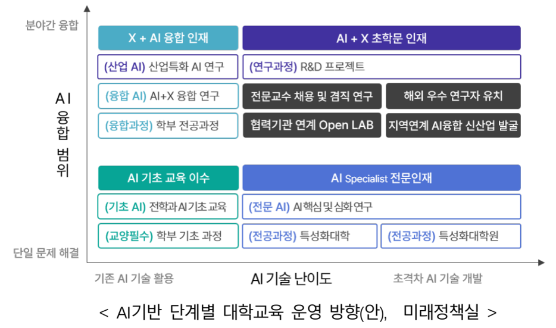
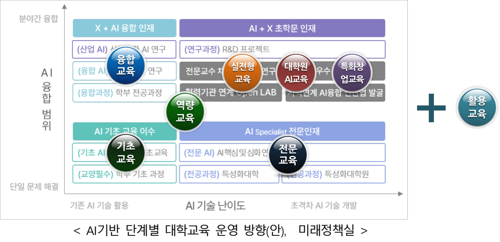

Section 1
📋개요 및 접근법
AI 전문·융합교육과정 설계 및 운영 분야 (과업 2) 교육부 지정 세부 과업과 부산대학교의 접근 방안
전문교육
AI 개발자에 요구되는 역량 변화를 반영한 교육과정 재설계, 전공 과목에서 AI 윤리교육 통합 설계 추진
융합교육
AI 전공자가 도메인 지식을 습득하고, 도메인 전공자는
AI를 이해·활용할 수 있는 분야별 AI 융합교과 개발
실젼형 교육
기업 현장 데이터 기반 실전 문제를 학생들이 AI를
활용하여 해결하고 기업 재직자가 멘토링하는 실전형 프로젝트 운영
교육기반
AI 교원의 AI 교육·연구 실적 및 기여도를 반영할 수 있도록교원업적평가 개선 및 AI 교육 기여 교원 대상 인센티브 부여
📌 접근 전략
✦ 위 4가지 세부 과업을 교원 · 교육과정 · 교육기반 3가지 요소로 구분하여 추진 방향을 체계화
✦ 각 요소별로 핵심 KPI를 정의하고 목표치를 제시하여 제안의 신뢰도를 부각
✦준비되어 있음(펜토미노 포함 기존 교육 혁신 작업)과 큰 규모(수혜·배출 학생 지표)를 강조
✦ 각 요소별로 핵심 KPI를 정의하고 목표치를 제시하여 제안의 신뢰도를 부각
✦준비되어 있음(펜토미노 포함 기존 교육 혁신 작업)과 큰 규모(수혜·배출 학생 지표)를 강조
교원
AI/AX 중점교원 제도 도입, 외부 산업계 전문가 교육 참여 확대, KPI 제시
교육과정
8개 AI/AX 교육 분류 체계, 다양한 학습 트랙, 전공·융합 교육과정 상세 설계
교육기반
인프라·플랫폼 구축, 교원 평가제도 개선, 조교 제도 개편, 다분반·집중수업 도입
Section 2
👩🏫교원
AI/AX 중점교원 제도 도입과 산업계 외부 전문가 교육 참여 확대를 통해 교육 역량을 강화합니다.
1
AI/AX 중점교원 제도 도입 및 확대
💡 AI/AX 중점교원 제도란 AI 기술을 전공 연구·교육에 실질적으로 접목한 교원을 공식 인정하고 지원하는 체계입니다.
🎓 요건 정립 (다음 두가지 중 한가지 이상)
연구 기반 — 전공 분야에 AI 기술·도구를 접목하여 우수 연구 성과를 창출한 교원
교육 기반 — 전공 분야에 AI 기술·도구를 접목하여 교과목을 운영하여 교육 품질 향상에 기여한 교원
🎯 목표
✦ AI/AX 중점교원 지정 및 현황 파악 후 목표치 제시
✦ 신임 교원의 50% 이상을 AI/AX 중점교원으로 채용
✦ 신규 채용 수요 조사 시 AI/AX 중점교원 여부 포함
✦ 신임 교원의 50% 이상을 AI/AX 중점교원으로 채용
✦ 신규 채용 수요 조사 시 AI/AX 중점교원 여부 포함
2산업체·연구소 외부 AI/AX 전문가 교육 참여 확대
AI/AX 멘토 (Mentor)
실전형 AI 프로젝트 지도.
수백 명 확보 목표.
수백 명 확보 목표.
AI/AX 교육자 (Instructor)
AI/AX 교과 교육 직접 참여.
겸임 교원 지위 부여. 수십 명 확보 목표.
겸임 교원 지위 부여. 수십 명 확보 목표.
AI/AX 설계자 (Architect)
AI/AX 교육·연구 설계 참여.
특임 교원 지위 부여. 십수 명 확보 목표.
특임 교원 지위 부여. 십수 명 확보 목표.
3우수 교원 확보 방안 — 해외 선진 사례 벤치마킹
AI 인재 글로벌 전쟁 — Meta 4년 3억 달러, 美 빅테크 AI 초봉 40만 달러(약 5.5억 원) 수준.
한국 고급 AI 인재 약 40% 해외 이탈(세계 최심각). 국립대 정년트랙 급여로는 산업계 대비 1/3~1/5 수준만 제공 가능 — 구조적 제도 혁신 필요
한국 고급 AI 인재 약 40% 해외 이탈(세계 최심각). 국립대 정년트랙 급여로는 산업계 대비 1/3~1/5 수준만 제공 가능 — 구조적 제도 혁신 필요
🌐 해외 선진 사례 벤치마킹 4대 제도 혁신 방안
🔗 산학일체형 교수제 (One-Body)
Stanford 벤치마킹
대학-기업 공동임용 (Dual Affiliation)
「교육공무원법」 §15 · 「산업교육진흥법」 §9 근거
AI 거점대학 겸직특례 제도 신설 필요
주당 20~40% 기업활동 공식 연구시간 인정
기업 매칭펀드 연 2~3천만 원 + 기술이전료 배분 최대 50%
「교육공무원법」 §15 · 「산업교육진흥법」 §9 근거
AI 거점대학 겸직특례 제도 신설 필요
주당 20~40% 기업활동 공식 연구시간 인정
기업 매칭펀드 연 2~3천만 원 + 기술이전료 배분 최대 50%
🏥 AI 병원형 수익회계제 (AI Clinic Model)
의대 수당 준용
산학협력단 내 AI 산업회계(AI Clinic Account) 신설
수익 배분 — 대학운영비 40% / 교원성과급 60%
산학 프로젝트·자문·기술이전 수익을 실질 보상으로 연결
「산학협력단 설치·운영 규정」 개정 + 감사원 유권해석으로 법적 근거 확보
수익 배분 — 대학운영비 40% / 교원성과급 60%
산학 프로젝트·자문·기술이전 수익을 실질 보상으로 연결
「산학협력단 설치·운영 규정」 개정 + 감사원 유권해석으로 법적 근거 확보
🚀 창업 휴직형 교수제 (AI Startup Sabbatical)
Stanford 벤치마킹
「교육공무원법」 §44 근거 AI 창업특별휴직제 신설
최대 2년(성과 시 1년 추가 연장) 허용
창업성과(매출·특허·투자유치·고용창출)를 연구실적으로 인정
기술이전료 배분 확대(최대 50%) + 수익금 개인성과급 전환
최대 2년(성과 시 1년 추가 연장) 허용
창업성과(매출·특허·투자유치·고용창출)를 연구실적으로 인정
기술이전료 배분 확대(최대 50%) + 수익금 개인성과급 전환
🛤️ 다중 트랙 제도 (Multi-Track)
CMU 벤치마킹
정년트랙 외 3개 트랙 병행 신설
✦ Professor of Practice — 산업경력 10년+ 전문가
✦ Research Faculty — 연구전담 트랙
✦ Teaching Faculty — 교육전담 트랙
변동보상 — 기본급 40% + 성과급 60%
✦ Professor of Practice — 산업경력 10년+ 전문가
✦ Research Faculty — 연구전담 트랙
✦ Teaching Faculty — 교육전담 트랙
변동보상 — 기본급 40% + 성과급 60%
🔀 공동임용 제도 강화 (Joint Appointment)
MIT Cross-Appointment 벤치마킹
AI 단과대학 ↔ 타 단과대(공대·의대·인문사회대) 교원 공동소속 구성
AI 단과대가 타 학과 교원의 인사·예산 일부 직접 관리
AI 단과대가 타 학과 교원의 인사·예산 일부 직접 관리
해외 석학 초빙교수제(Visiting/Joint Professor) + 국제 공동강의
AI 거점대학이 해외 유수 대학(MIT·Stanford·CMU)과 공동임용 협정 체결
AI 거점대학이 해외 유수 대학(MIT·Stanford·CMU)과 공동임용 협정 체결
KPI교원 KPI
AI/AX 중점교원 수
AI/AX 중점교원 수 및 비중
AI/AX 겸임교원 수
외부 AI/AX 전문가 참여 인원수
Section 3
📚교육과정
Teaching AI / Beyond Learning AI / Teaching with AI 세 영역, 8개 분류의 AI/AX 교육 체계를 설계합니다.
분류AI/AX 교육 분류 체계
교육과정 설계의 핵심 원칙
Multi-Layered
다층적 구조
• 깊이 — 기초→역량→전문→고급 수직 확대
• 폭 — 전공/비전공, 학부/대학원 수평 확대
Connected Pathways
연결된 트랙
• 학생 맞춤형 진학 경로 제공
• AI 전공자·비전공자 각각의 명확한 진로 구성
Practical Orientation
실전 중심
• 산업 데이터 기반 문제 해결
• 멘토링, 프로젝트 기반 학습(PBL)
Scalability
대규모 운영
• 다분반 기반 확장형 운영
• 다양한 학생 수용 가능
Flexible Delivery
유연한 학습 형식
• Flipped Learning, Blended Learning
• 집중수업, 온라인 비중 확대
TEACHING AI
가. AI 기초 교육 — Literacy
나. AI 역량 교육 — Skills
다. AI 전문 교육 — Engineering
라. AI 융합 교육 — Convergence
마. AI 실전형 교육 — Problem Solving
바. 대학원 AI 교육 — Graduate
BEYOND LEARNING AI
사. AI 특화 창업 교육
Venture Creation
Venture Creation
TEACHING WITH AI
아. AI 활용 교육
AI Enhanced
AI Enhanced
참고 자료 — AI 기반 대학교육 운영방안

📐 AI 기반 단계별 대학교육 운영방안(안) - 미래정책실 (클릭하여 확대)

📐 AI거점대학 교육 분류와의 관계 (클릭하여 확대)
트랙다양한 AI/AX 학습 트랙 연결 구조
AI/AX 교육 분류는 개별적이지 않으며, 학생과 산업체의 다양한 수요를 충족할 수 있는 트랙 구성이 가능한 연결 구조로 설계됩니다.
AI 전공자 트랙 예시
AI Literacy→AI Skill→AI Engineering→Problem Solving→AI Venture
AI Literacy→AI Skill→AI Engineering→Problem Solving→AI Research
AI Literacy→AI Skill→AI Engineering→AI Convergence→Problem Solving→AI Research
AI 비전공자 AX 트랙 예시
AI Literacy→AI Skill→AI Convergence→Problem Solving→AI Venture
AI Literacy→AI Convergence→Problem Solving→AI Research
가AI 기초 교육 — Foundation of AI & Data Literacy
전교생 대상 필수 AI 기초 교육 — 기존 컴퓨터/SW 관련 교양 필수를 전면 개편하여 2026년부터 운영 중.
✦ 교과목명: 인공지능과 디지털 사고 (AI Literacy & Digital Thinking)
✦교육과 운영의 핵심 주체: AI융합교육원
✦ 교과목명: 인공지능과 디지털 사고 (AI Literacy & Digital Thinking)
✦교육과 운영의 핵심 주체: AI융합교육원
자연/공학 계열
코딩 기반 과학적 문제 해결 능력 강화. 파이썬 기반 문제 해결 및 간단한 웹 구현, Copilot 활용
인문/사회/체육 계열
데이터 분석 기반 디지털 리터러시. 사회적 문제에 대한 AI 기술 고찰 + 기초 데이터 분석 실습
예술 계열
창의적 AI 도구 활용 및 표현력 배양. 이미지 생성·작곡 등 AI 기반 창작 사례 실습
학점 및 운영: 3학점(3-3-0), 1학기제, Flipped Learning / 양학기 운영, 학기 별 65분반 (총 130분반) / 온라인(1h)+오프라인(2h) Blended 수업 / 학기말 Term Project
주요 구성: 컴퓨팅 사고력 및 파이썬 기초 코딩, 생성형 AI 도구(ChatGPT·Gemini·구글 AI Studio) 활용, Vibe Coding 기반 웹서비스 제작, AI 윤리 및 디지털 시민성 교육
주요 구성: 컴퓨팅 사고력 및 파이썬 기초 코딩, 생성형 AI 도구(ChatGPT·Gemini·구글 AI Studio) 활용, Vibe Coding 기반 웹서비스 제작, AI 윤리 및 디지털 시민성 교육
나AI 역량 교육 — AI Tools & Skills Training
AI 도구·활용 역량 강화를 원하는 AI전공 및 비전공 학생 대상 실습 중심 교육.
✦교육과 운영의 핵심 주체: AI융합교육원
✦참고 - 부산대학교 2026 AI 첨단산업 인재양성 부트캠프 사업 선정 ↗
✦부트캠프형 AI역량 교육 강화, 수혜자 확대
✦교육과 운영의 핵심 주체: AI융합교육원
✦참고 - 부산대학교 2026 AI 첨단산업 인재양성 부트캠프 사업 선정 ↗
✦부트캠프형 AI역량 교육 강화, 수혜자 확대
✦ 교과 설계 주안점
Cross-Major AI Hands-on Education
전공 초월형 AI 실습 교육
전공 무관(Cross-Domain Accessibility) — 어떤 전공이든 참여 가능한 개방형 AI 실습 체계
Industry-Aligned, Platform-Driven
도구 중심 AI 역량 강화 교육
산업계와 공동 설계, AWS·Google·Microsoft·NVIDIA·NAVER 플랫폼 기반 운영
외부 전문교육기관 협력
Scalable Multi-Section Delivery
다수 분반 기반 확장형 운영
표준화된 커리큘럼 기반 다수 분반 운영 → 대규모 학생 수용
Flipped & Blended Learning
플립드·혼합형 학습
온라인 사전 학습 + 오프라인 실습 결합 → 학습 효율성·수강 유연성 확보
Immersive Block-Based Intensive Learning
집중 몰입형 교육
2·4·8주 단위 집중이수제. 단기간 내 실질적 역량 습득 유도
🏕️ 방학 중 부트캠프형 집중 교육 적극 도입
Level-Based Tiered Structure
수준별 단계형 교육 체계
초급–중급–고급 단계형 트랙 구성 → 학생 맞춤형 학습 경로 제공
교과목 구성 안의 예 (확정 아님)
다AI 전문 교육 — Advanced AI Engineering Education
AI대학 소속 ADP 전공 학부/학과 및 대학원 교육 전문화.
✦AI 개발자에 요구되는 역량 변화 (기존 : 코드 생성 능력 → 변화 : 문제 정의 및 설계, 협업 역량, 코드 검증, 위험 관리 등)를 반영한 교육 과정 재설계
✦전공과목에서 AI 윤리 교육 통합 설계추진
✦교육과 운영의 핵심 주체: AI대학 소속 ADP 전공
✦AI 개발자에 요구되는 역량 변화 (기존 : 코드 생성 능력 → 변화 : 문제 정의 및 설계, 협업 역량, 코드 검증, 위험 관리 등)를 반영한 교육 과정 재설계
✦전공과목에서 AI 윤리 교육 통합 설계추진
✦교육과 운영의 핵심 주체: AI대학 소속 ADP 전공
신규·개편 전공 차별화
- 산업공학부 산업AI전공 ↔ 산업공학전공 차별화
- 데이터사이언스학부 ↔ 의생명공학부 데이터사이언스전공 차별화
- AI컴퓨터공학부 인터랙티브 컴퓨팅전공 ↔ 디자인테크놀로지전공 차별화
기존 전공 교육과정 개편
- AI컴퓨터공학부 인공지능전공, 컴퓨터공학전공 AI 전문 교육 개편 방안
- 산업공학부 산업공학전공 AI 전문 교육 개편 방안
- 통계학과 AI 전문 교육 개편 방안
🎯 몰입형 교육체계 선도적 도입
AI대학 ADP 전공에서 몰입형 교육체계를 선도적으로 도입
→ 8주 단위 Half-Semester 제도 도입 추진 (전반기 8주 + 후반기 8주)
✏️ 학부/학과별 세부 교육과정은 집필위원회 작성 결과 반영 예정 → 학과/전공별 교육과정
라AI 융합 교육 — AI Convergence Education
AI대학 AX융합학부, 브랜드 대학 AX융합전공 등에서 운영하는 전공/도메인 특화 AI융합 교과목.
✦예: 행정학과 "공공데이터분석론"(2025), 의류학과 "패션리테일분석"(2024), 미디어커뮤니케이션학과 "데이터기반스토리텔링"(2022) 등
✦교육과 운영의 핵심 주체: 융합전공 주관 학과 + AI융합교육원
✦예: 행정학과 "공공데이터분석론"(2025), 의류학과 "패션리테일분석"(2024), 미디어커뮤니케이션학과 "데이터기반스토리텔링"(2022) 등
✦교육과 운영의 핵심 주체: 융합전공 주관 학과 + AI융합교육원
⚠️ 융합 교육 분야 작성시 고려 사항과 접근법
- 융합교육센터 기준: 19개 융합전공, 10개 연계전공, 35개 마이크로디그리, 21개 트랙 운영 중이며 다수가 AX융합 분류 가능
- 전공·교육과정은 있으나 참여 학생이 거의 없거나 교과목을 개설하지 않는 경우도 다수 → 행정 부하 가중
- 전공+AI융합 신규 교과목 개발을 위한 참여학과 참여율 저조 → 참여를 유도할 추가 유인책 마련 필요
- AI융합교육원 주도의 계열별 융합교과목 적극 개발 → 여전히 도메인 전문가와 관련 데이터 확보 필요
- 무분별한 신설 보다는 AI/AX 관련 기존 융합전공을 재편하고 가능하면 AX융합학부로 소속 변경 검토
- 이공계 분야 융합 교과목 발굴 및 X-Mobility 분야 융합 교육 특화 부각
✏️ 융합교육과정별 세부 교육과정은 집필위원회 작성 결과 반영 예정 → 학과/전공별 교육과정
마AI 실전형 교육 — Real-World AI Problem-Solving (with Industry Data)
가칭 AX-PBL 교과목
✦산업 데이터 기반 AI 문제해결 프로젝트 I & II. 최대 6학점.
✦개별 학과의 전공필수형 캡스톤디자인 교과목을 AX-PBL로 대체 가능하도록 제도 개편
✦교육과 운영의 핵심 주체: 장영실AI융합연구원 / AI융합교육원 + 개별 대학원 학과 및 BK21 사업단과 협력
✦산업 데이터 기반 AI 문제해결 프로젝트 I & II. 최대 6학점.
✦개별 학과의 전공필수형 캡스톤디자인 교과목을 AX-PBL로 대체 가능하도록 제도 개편
✦교육과 운영의 핵심 주체: 장영실AI융합연구원 / AI융합교육원 + 개별 대학원 학과 및 BK21 사업단과 협력

참여자 구성 (URP 연계)
- AI/AX 학부 연구생
- 교수, 대학원생
- 산업체 재직자 및 전문가
복합 목적
- 교육 + 연구개발 + 지역·산학 협력의 복합체
- 동남권 수요 기반 주제 발굴
- 성장엔진 분야 프로젝트는 X-모빌리티 대학에서 별도 관리
바대학원 AI 교육 — Graduate Level AI Education
A. 대학원 공통 핵심 교육
✦모든 대학원 전공에서 활용 가능하도록 교과목 설계
✦대형 강의·다수 분반 확장형 운영
✦교육과 운영의 핵심 주체: 장영실AI융합연구원
✦대형 강의·다수 분반 확장형 운영
✦교육과 운영의 핵심 주체: 장영실AI융합연구원
🌟 Research Methods with AI
🌟 Advanced Data Analytics
🌟 AI for Scientific Discovery
기대효과: AI 활용 연구 생산성 개선, 책임 시수 경감에 따른 대학원 전공 강의 축소(?)에 대응
📊 학기별 강좌 수 변화:
학기별_개설강좌수.html ↗
B. 주권형 AI 컴퓨팅·시스템 교육
✦Sovereign AI 개념 기반 특화 교육 프로그램 개발
✦핵심 주체: ADP 대학원 + 장영실AI융합연구원 연계
✦핵심 주체: ADP 대학원 + 장영실AI융합연구원 연계
⚙️ 모델
국내 생성형 AI 모델 개발·활용 생태계 기여 방향 교육
Physical AI 한국형 VLA 및 World Model 개발·활용 생태계 기여
Physical AI 한국형 VLA 및 World Model 개발·활용 생태계 기여
⚙️ 데이터
성장엔진을 포함 국가 전략 산업·기반 시스템 분야의 데이터 보안 및 Ontology/Context 구축을 위한 관련 이론, 도구, 기술 교육
⚙️ 시스템
국산 AI 반도체·로봇 기반 AI 시스템 개발·활용 생태계 기여 방향 교육
✦ 서울대·과기원 등 우수 대학원과 협력·공동 교육 체계 구축
✦ 장영실AI융합연구원 Top-Down형 전략 연구와 연계
✦ 장영실AI융합연구원 Top-Down형 전략 연구와 연계
사AI 특화 창업 교육 — AI Venture Creation Education Beyond Learning AI
🏆 창업 역량 — 창업중심대학 기관 평가 최우수
부산대학교는 창업중심대학 기관 평가에서 "최우수"를 획득하여 창업 교육·지원 역량을 검증받았습니다.
관련 보도 ↗
관련 보도 ↗
실전형 AI 기술 창업 특화 교육
- AI/AX 기술 창업가의 교육 참여 및 멘토링 지원
- 자체 AI 인프라 활용 지원
- AI API 크레딧 및 바우처 제도 운영
핵심 주체
아AI 활용 교육 — AI Enhanced Education Teaching with AI
✦AI를 교육의 대상이 아닌 도구로 활용하여 기존 교과의 학습 효과·교수 효율성·학습 경험을 혁신합니다.
✦교육과 운영의 핵심 주체: 교양교육원, AI융합교육원, 에듀테크센터
✦교육과 운영의 핵심 주체: 교양교육원, AI융합교육원, 에듀테크센터
학습 개인화
Personalized Learning — AI 기반 개인 맞춤 학습 경로 및 피드백 제공
학습 효율 향상
Learning Efficiency — Flipped Learning으로 오프라인 시간 심화 활용
교수 생산성 증대
Instructor Productivity — 표준화 콘텐츠로 다중 분반 운영 최적화
학습 경험 혁신
Enhanced Learning Experience — Labster·PhET 등 최신 AI 도구 활용
우선 적용 후보 교과목
일반물리학개론/실험
공학미적분학
공학선형대수학
고전읽기와 토론
열린사고와표현
공학작문 및 발표
📊 우리 대학 개설 강좌 현황:
종합분석_개설강좌.html ↗
💡관련 사례: AI 코스웨어(구 효원 브릿지) — 자연·공학 계열 수학·물리·화학 AI 코스웨어 우선 개발
5가지 실행 모델
① 중앙 주도형 콘텐츠 개발 — Individual → Institutional 전환, 규모의 경제 확보
② Flipped & Blended Learning — "인공지능과 디지털 사고", "대학영어"에서 이미 적용 중인 모델
③ AI 기반 콘텐츠 개발 — LLM·자동 문제 생성·영상 생성 도구 + Labster·PhET 활용
④ 경쟁 구조 (Competitive Model) — 복수 콘텐츠 개발팀 지정, 학생 선택권 확대, 품질 향상
⑤ 평가·공개 기반 환류 체계 — 강의 평가·성과 데이터 공개, 우수 콘텐츠 지속 확산
3학과/전공별 교육과정 — AI대학 소속 학부/학과별 세부 교육과정
✏️ 이 섹션은 집필위원회 작성 결과를 바탕으로 추후 기입 예정입니다.
🤖 AI컴퓨터공학부
인공지능전공 / 컴퓨터공학전공 / 인터랙티브컴퓨팅전공
✏️ 세부 교육과정 작성 예정
📊 데이터사이언스학부
데이터사이언스전공
✏️ 세부 교육과정 작성 예정
⚙️ 산업공학부
산업공학전공 / 산업AI전공
✏️ 세부 교육과정 작성 예정
📈 통계학과
통계학과 AI 전문 교육과정
✏️ 세부 교육과정 작성 예정
🔗 AX융합학부
9개 분야 18개 AX 융합전공 (지역 성장엔진 분야 포함)
✏️ 융합전공별 세부 교육과정 작성 예정
KPI교육과정 KPI
🎯 교육부 문건 기준: "연 1,500명 내외" 성과 목표치 제시 (배출 인원 기준, 교당 500명 예상). 가능한 많은 학생이 수혜·배출되도록 극대화 추진.

참고: SW중심대학 성과지표 1 (클릭하여 확대)

참고: SW중심대학 성과지표 2 (클릭하여 확대)
Implementation융합교육 실현의 어려움
⚠️다양한 AI/SW 융합교육과정을 설계하였으나 실제 참여율은 저조
✦참여 학과/교수의 융합전공 교과 개발 참여율 저조
✦학생의 융합전공 선택 동기 높지 않음 : 직접적 인센티브의 부재
✦융합형 교과목 이수의 어려움 : 전공 불인정 + 수강의 어려움 (수강 인원이 적어 단일 또는 소수 분반, 수업 시간표 문제)
🎯AI융합교육원 주도의 융합교과목 개발 + 학생 수강 동인을 높이고 이수를 쉽게하는 방안 모색
✦참여 학과/교수의 융합전공 교과 개발 참여율 저조
✦학생의 융합전공 선택 동기 높지 않음 : 직접적 인센티브의 부재
✦융합형 교과목 이수의 어려움 : 전공 불인정 + 수강의 어려움 (수강 인원이 적어 단일 또는 소수 분반, 수업 시간표 문제)
🎯AI융합교육원 주도의 융합교과목 개발 + 학생 수강 동인을 높이고 이수를 쉽게하는 방안 모색
Section 4
🖥️교육기반 — 인프라·플랫폼
AI/AX 교육연구에 필요한 GPU 인프라, 클라우드 플랫폼, 실습 환경 구축 계획
Section 5
⚙️교육기반 — 조직·제도·프로그램
AI/AX 교육 활성화를 위한 교원 평가 제도 개선, 인센티브, 수업 운영 혁신 방안
1교원 업적평가 제도 개선
✦ 교육 영역에 AI/AX 교육 실적 기여도 항목 신설.
📌Top-Tier AI Conference 임용·승진 실적 인정
📌Top-Tier AI Conference 임용·승진 실적 인정
📋 업적평가 신설 항목 (AI/AX 교육 기여도)
AI 융합교과목 개발·운영 — 전공 특화 AI 융합교과 신설·운영 실적
융합교과목 팀 강의 운영 — AI 전공-비전공 교원 공동 팀티칭 실적
AI 융합교과목 개발 우수사례 수상 — 교내외 교육 혁신상 수상 가점
타 전공 교원 대상 AI 교육 — CTL 기반 AI 연수 강사 활동 인정
Top-Tier AI 컨퍼런스 논문실적 — 임용·승진 시 SCI 저널 동급 이상 인정
Top-Tier AI 학회 (인정 범위)
Machine Learning (Core AI) — 최상위 3대 학회
NeurIPS · ICML · ICLR — BK21에서 SCI 상위 저널과 동급 이상 취급
Computer Vision
CVPR · ICCV · ECCV — 산업 영향력 매우 큼 (자율주행, 제조, 의료 영상)
NLP — LLM 시대 이후 중요도 급상승
ACL · EMNLP · NAACL
그 외 Top-Tier / 상위 A급
AAAI · KDD · WWW (The Web Conference) · IJCAI
2AI/AX 교육 기여 교원 인센티브
대형 강의 운영 시 수강생 수에 비례한 조교 등 강의보조인력 지원 및 수당 지급으로 교원의 교육 참여 부담 경감
A. 📌 조교 제도 개편
현황: 학기 당 1,100여 명, 18억 5천만원 규모 조교비 지출 / 🎯장학조교+연구조교 → 수업조교+연구조교
수업조교
✦수업에 직접 기여. 매칭 수업 필요
✦역할 수준에 따라 조교비 차등 지급.
✦역할 수준에 따라 조교비 차등 지급.
연구조교
✦AI/AX 교육 활성 기여 교수 포함 우수 교수의 연구활동 보조
✦교수 인센티브로 활용.
✦교수 인센티브로 활용.
📌배정 방식 변경 — 학과·기관 단위 배정 → 본부 관련 기관에서 수요(→수업조교)·성과(→연구조교) 기반 직접 배정·관리
B. 다분반 강의·집중수업 활성화 (교원 연구 몰입 시간 확보)
집중수업 방식
8주 Block Course (학기 중) — 전반기(8주)+후반기(8주)
2~4주 Boot Camp (방학) — 단기 집중 이수
교원 혜택
- 다분반 기여 교원 → 인정 책임 시수 확대
- 학기 중 1~2개월, 최대 1학기까지 연구 몰입 가능
3비전공 교원 AI 기본·심화 연수 체계 (CTL)
비전공 교원이 전공 특화 AI 융합교과를 직접 개발·강의할 수 있도록 교수학습센터(CTL) 중심의 단계별 AI 연수 운영
🎓 기본 연수 (AI Literacy for Faculty)
✦ AI 개념·도구 기초 이해
✦ 교과 활용 사례 기반 실습
✦ AI 윤리·저작권 교육
✦ 대상: AI 비전공 전체 교원
✦ 교과 활용 사례 기반 실습
✦ AI 윤리·저작권 교육
✦ 대상: AI 비전공 전체 교원
🔬 심화 연수 (AI Integration for Faculty)
✦ 전공 특화 AI 융합교과 설계·개발
✦ AI 전공 교원과 공동 개발 워크숍
✦ 우수 사례 공유 및 교과목 인증
✦ 대상: 기본 연수 이수 교원 중 희망자
✦ AI 전공 교원과 공동 개발 워크숍
✦ 우수 사례 공유 및 교과목 인증
✦ 대상: 기본 연수 이수 교원 중 희망자
점검 체계 — 연수 이수율·교과 개발 실적·학생 만족도를 정기 점검하여 연수 프로그램 환류에 반영
4교육과정위원회 운영 및 AI 역량 측정 환류체계
🏛️ 산업계 전문가 참여 교육과정위원회
산업계 전문가가 정기적으로 참여하는 교육과정위원회를 통해 현장 수요를 반영한 교육과정 지속 개선
✦ AI/AX 교육자·설계자(Instructor/Architect) 포함
✦ 분야별 산업 전문가 · 정부·연구소 인사 참여
✦ 연 2회 이상 정기 개최 + 수시 자문
✦ 분야별 산업 전문가 · 정부·연구소 인사 참여
✦ 연 2회 이상 정기 개최 + 수시 자문
📊 학생 AI 역량 측정 및 환류
AI 거점대학 공동 개발한 역량 측정 도구로 학생 AI 역량을 측정하고, 결과를 교육 프로그램에 환류